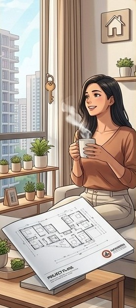
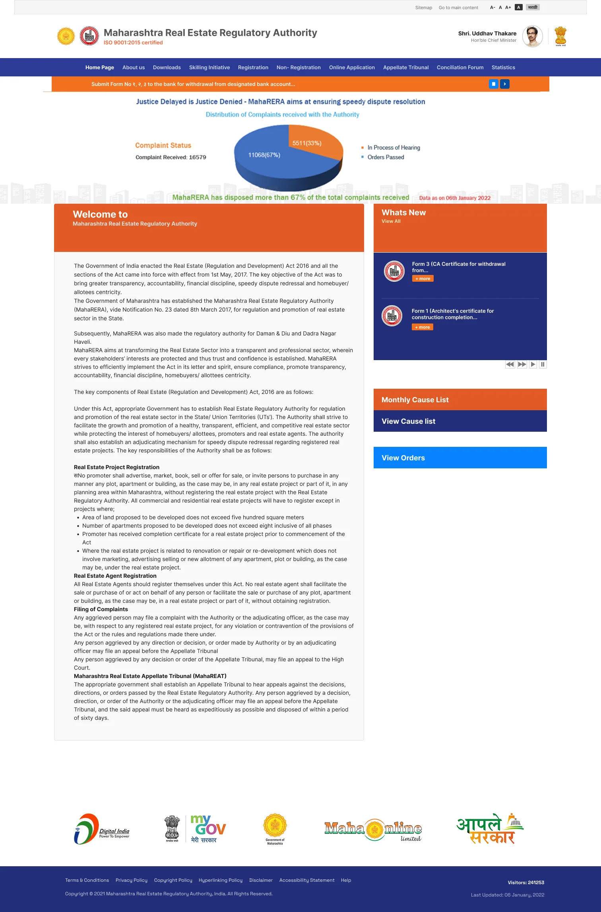
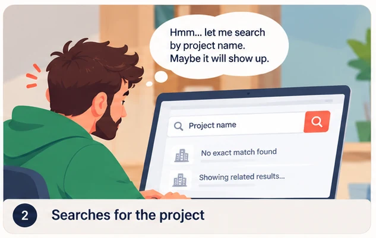
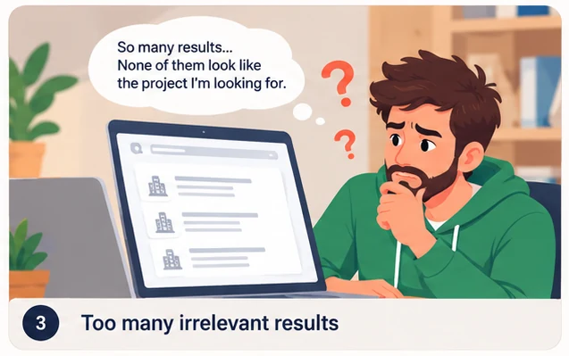
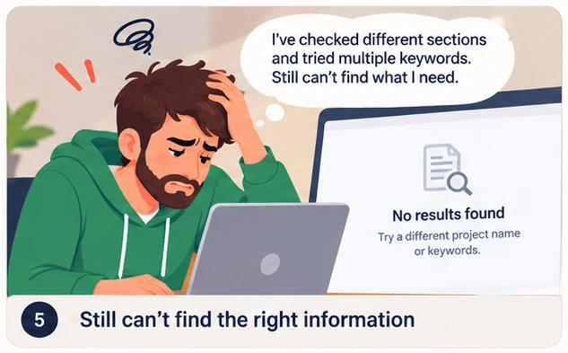
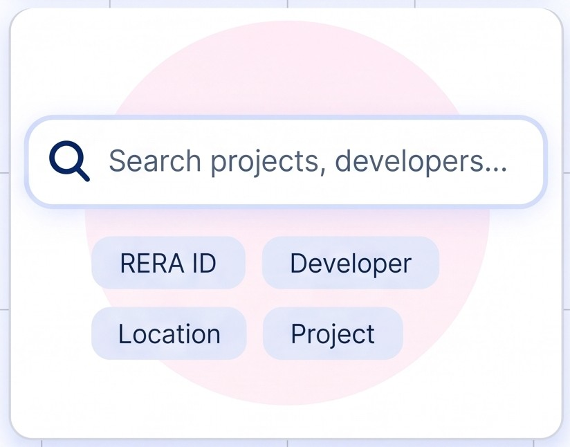

Citizens &
Homebuyers
- Verify projects Details
- Track project progress
- Verify Agent Authenticity
- Raise Dispute
Story of designing the MahaRERA public website
Improved usability and streamlined key user journeys, reducing task completion time by 80% for a better, more efficient user experience.
The regulator, its services and the people it serves.

Each group comes with a different question, but all of them need to trust what they see.

The website confused homebuyers, while the portal frustrated applicants. We tackled the website first, because it serves the most people.

Homebuyers find the website difficult to use due to its complex structure and convoluted design.
Users struggle to complete applications due to broken workflows, dropped sessions, long forms, and endless document uploads.
A homepage full of legal text, a 3D chart and auto-scrolling updates. The tasks people came for were nowhere in sight.

Surveys, interviews and tests on the old website.
Good design starts with real pain points. Before touching the interface, we studied hundreds of letters, reviews, and emails—and spoke directly with everyday users to understand what wasn't working.
survey responses
in-depth interviews
usability test participants
of website analytics
heuristic & WCAG issues
At this scale, every click impacts a life's savings: MahaRERA connects 124M+ citizens with 45000+ real estate projects, 15,000+ builders and 42,000+ agents, balancing massive market demand with absolute public accountability.
The site was designed for desktop and for officials, but its real audience was homebuyers on mobile.
Total survey responses
responses
Why do you use the MahaRERA website?
Multiple responses allowed
We asked real users to do what they normally come to the site for. Most could not finish without help.
System Usability Scale
iIndustry average is 68.



From 300+ notes to three problem statements.
We grouped every quote and observation. Four themes covered almost everything users struggled with.
"I almost paid a booking amount before I knew the project was delayed by two years."
Homebuyer, 34 · Pune"Clients ask me for proof I'm registered. I just send them a screenshot."
Agent, 29 · Thane"Buyers judge my project from that page, and it looks like a spreadsheet."
Promoter, 47 · MumbaiEach statement names the user, their need and what gets in the way. The HMW turns it into a design opportunity.
Homebuyer
Priya needs to check if a project is registered and on time before investing her savings, but the website asks for a registration number she doesn't have.
help homebuyers verify any project using what they already know?
Promoter
Rajesh needs his project to look credible to buyers and to find the latest rules quickly, but his public page reads like a spreadsheet and circulars are buried.
give promoters a clear public profile and one place for the latest rules?
Agent
Sneha needs to prove she is registered and share verified project details with clients, but the site has no simple way to look up or share either.
help agents earn client trust with one verified, shareable link?
Frustration peaked at search and verification, the two moments that matter most.
Swipe to see the full journey →
Users struggle to find key actions like finding a project, checking a developer, or filing a complaint.

02Finding projects, developers, RERA IDs or locations takes extra effort.
Dense legal and informational text makes the page difficult to read. Important information is buried instead of being easy to scan.
Menu labels are unclear, navigation is crowded and hard to use, and important tools are spread across different areas of the website.
Moving banners and auto-scrolling content can be distracting. The 3D chart is hard to interpret and the layout doesn’t work well across all devices.
Test the risky ideas, then rank every feature.
Important assumptions with little evidence were the riskiest, so we tested them first with quick prototypes.
The closer to the centre, the more it served our problem statements. Ideas outside the rings didn't fit a regulator's role or our users' needs.
Fewer steps, no dead ends and no PDFs before the answer.
High-priority features shipped first.
These are the high and mid-priority features that went live on the public website.
Search by project name, area, builder or reg. number, with suggestions as you type.
Colour-coded badges show a project's health in one look.
Summary cards and a progress timeline come first, with documents one click away.
Look up any agent's licence and validity, then share a verified link.
Browse registered projects near any location, filtered by type and status.
GIGW and WCAG 2.1 AA, English / मराठी toggle, text resize and mobile-first layouts.
We repeated the original test so the before and after numbers compare directly.
System Usability Scale
Up from 46 on the old site.
fewer "how do I find…" calls
more project searches per visit
of visits now fully on mobile
languages: English & मराठी
If a first-time buyer can do it, everyone else can do it faster.
Testing the riskiest guesses first saved weeks of rework.
The discarded ring kept the site focused on what a regulator should do.